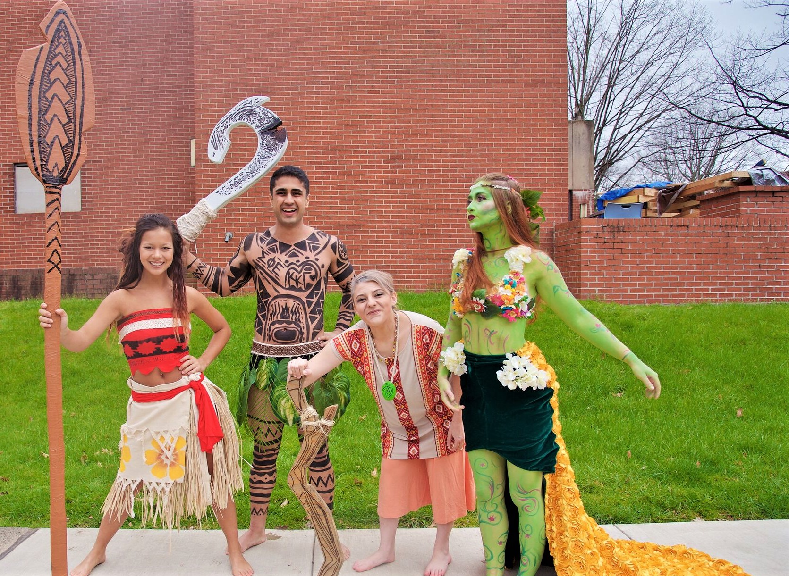
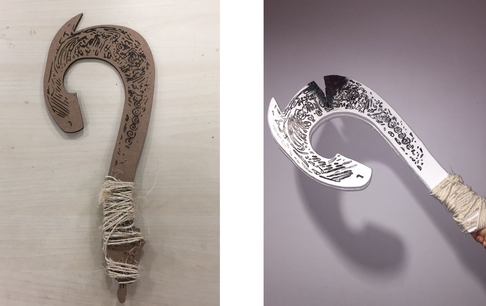
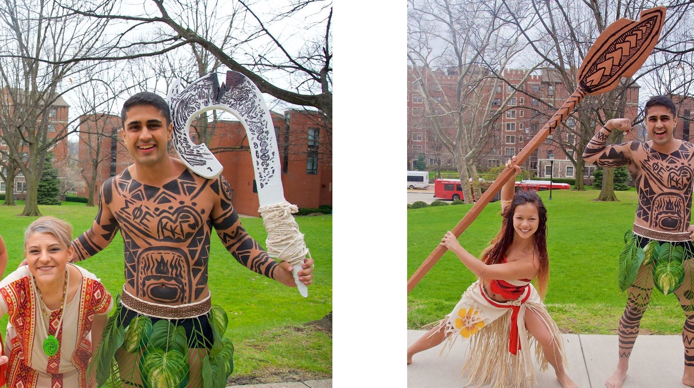
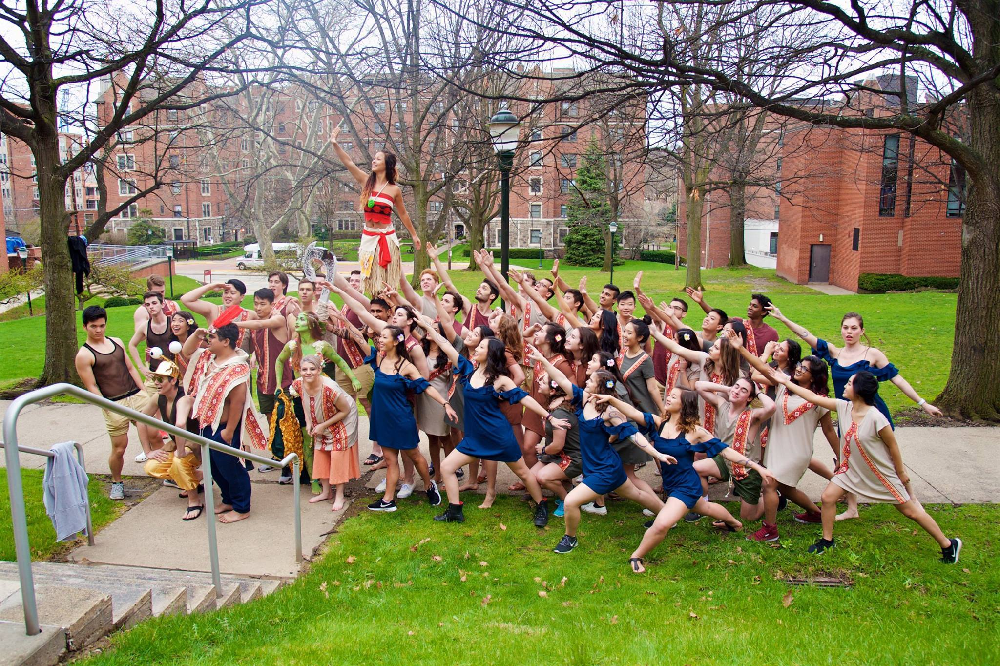

Every year, Carnegie Mellon's Greek organizations partner up to perform short musical shows, which are aggregated into one performance competition called "Greek Sing." The event's proceeds, and the fundraising efforts of the chapters, benefit a selected charity in the Pittsburgh community!
For my organization's show, I was the prop designer, tasked with creating physical replicas of the key props from Disney's "Moana." In addition to my design role, I was a chair for the organization and planning of the performance, and the philantrhopy lead for our fundraising efforts.

To understand the needs of the performers, I conducted form studies using cardboard and foam prototypes. In collaboration with experienced performers, these studies allowed me to better allign my design forms with the necessary on stage functions, while retaining the movie replica aesthetic.

Once the final forms had been decided and modelled in Rhino, I evaluated a variety of candidate processes for manufacturing, bringing in considerations for cost, usability, and easy of manufacturability. The hook and cane were constructed from bandsawed plywood, engraved via laser processing, and subsequently painted and stained. Due to it's size, the oar was made from an assembly of laser cut carboard pieces and piping, wrapped in painters tape, and decorated.
It was an honor to be awarded first place in the competition (I like to think it was because of our awesome props) and in philanthropy, as we raised over $16,000 for charity!
